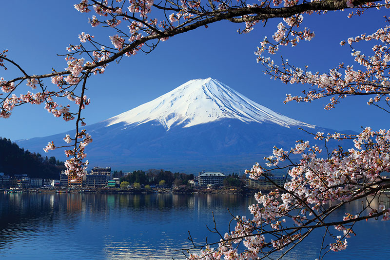

El monte Fuji , con sus 3776 m de altura, es el pico más alto de Japón,
resultado de una actividad volcánica que comenzó hace aproximadamente 100 000 años.
Hoy en día, este monte y sus alrededores constituyen un destino recreativo muy popular para
practicar el senderismo, acampar en la naturaleza o disfrutar de un momento de relajación.
Viajeros de todo el mundo acuden a las prefecturas de Shizuoka y Yamanashi para contemplar
esta impresionante montaña, considerada como uno de los símbolos más emblemáticos del país.
Para los japoneses, el monte Fuji es desde hace mucho tiempo un lugar de gran importancia espiritual y
una fuente de inspiración artística.
Más de 300 000 personas suben al monte Fuji cada verano. Sus cuatro rutas
principales ofrecen a los visitantes la posibilidad de acceder a la cima desde
distintos ángulos y hacer un alto en el camino en las zonas de descanso o estaciones,
donde encontrarán diversos servicios y alojamientos.
Las imágenes más icónicas del monte Fuji datan del período Edo (1603-1867).
Las distintas obras xilográficas del artista Ando Hiroshige sobre el monte Fuji
muestran imágenes de la montaña desde perspectivas y enclaves diversos, permitiendo
así que gente de todo el mundo pudiera obtener una visión general de la región y sus formas de vida.
El monte Fuji se formó hace aproximadamente 100 000 años a consecuencia de erupciones volcánicas que fueron
transformándolo hasta convertirlo en el pico más alto de todo Japón, alzándose a 3776 m de altitud.

CULTURA
Con el paso de los siglos, los japoneses han ido forjando un vínculo
espiritual con la montaña. Según cuenta la leyenda, el eminente religioso
ascético Hasegawa Kokugyo (1541-1646) escaló la montaña más de 100 veces.
Sus hazañas dieron lugar a la formación del Fuji-ko, un grupo de adoradores del
monte Fuji de ideología similar. Esta secta construyó santuarios, creó monumentos
rocosos y ayunó para dar constancia de su dedicación. El fanatismo de este grupo
llevó finalmente al shogunato Tokugawa a prohibir la religión. Sin embargo, la larga
tradición japonesa de culto a las montañas ha hecho que este monte siga siendo venerado
y respetado, considerándose un lugar de gran importancia espiritual.
Erupciones
El 26 de octubre de 1707, un brutal terremoto devastó Honshu,
la isla principal. Era sólo un aviso de lo que estaba por venir.
Apenas dos meses después, el 16 de diciembre, el gigante volcánico entró
en actividad. Comenzó la erupción del Monte Fuji.
nombre de gran erupción de Hōei. Aconteció 49 días después del terremoto de
Hōei que figura entre los más grandes jamás registrados en Japón, se desarrolló
sobre la vertiente suroeste del monte Fuji y ha formado tres pequeños picos designados primera, segunda y tercera chimenea.
Desde el año 781 se han registrado dieciséis erupciones, de las cuales, la mayoría han sido erupciones explosivas peleanas.
La mayoría sucedieron durante el periodo Heian con doce erupciones entre el año 800 y el 1083.
A veces, los periodos de inactividad pueden durar centenares de años como entre el 1083 y el 1511,
Curiosidades del monte Fuji
A continuación te presentare un video para conocer mas acerca del monte Fuji.